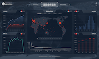
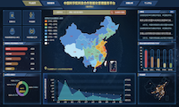
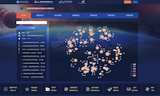
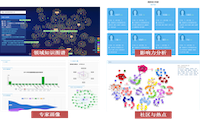

杜 一
我目前为中国科学院计算机网络信息中心大数据技术与应用发展部副主任，研究员，研究生导师，中国科学院青年创新促进会会员，CCF高级会员，北京市科技新星，中心科技委员会委员。博士毕业于中国科学院软件研究所，曾赴普渡大学 VACCINE 实验室交流访问。主要研究兴趣在科技大数据知识图谱、大数据分析挖掘等。截至目前，我主持包括国家自然科学基金优秀青年科学基金、国家重点研发计划青年科学家项目等在内的科研项目二十余项，在国内外知名期刊会议发表论文70篇，授权发明专利23项。主导及参与的大数据项目，为国家自然科学基金委、中国科协、中国气象局等国家部委及中国科学院学部局、科发局、国际合作局、国家空间科学中心等院机构提供服务。
信息最后更新时间：2023年8月31日
| 教育&工作背景 | |
| 2019年7月 - 今 | 中国科学院计算机网络信息中心
期间：2019年7月-2021年5月:大数据技术与应用发展部 大数据知识工程实验室主任 期间：2021年5月-今:大数据技术与应用发展部 副主任 |
| 2021年12月 - 今 | 中国科学院计算机网络信息中心，大数据技术与应用发展部研究员
主要研究方向: 数据挖掘、知识图谱 |
| 2015年12月 - 2021年12月 | 中国科学院计算机网络信息中心，大数据技术与应用发展部副研究员
主要研究方向: 时空数据可视分析、数据挖掘 |
| 2015年9月 - 2016年9月 | 普渡大学可视分析实验室(VACCINE)访问学者
主要研究方向: 信息可视化，可视分析 合作导师: David Ebert |
| 2013年7月 - 2015年12月 | 中国科学院计算机网络信息中心，科学数据中心助理研究员
主要研究方向: 信息可视化, 人机交互 |
| 2008年9月 - 2013年7月 | 中国科学院软件研究所人机交互技术与智能信息处理实验室博士
E-UIDL: 一种移动计算环境下的用户界面描述语言 指导老师: 戴国忠 答辩委员: 华庆一, 史元春, 汪国平, 王志良, 山世光 |
| 2004年9月 - 2008年7月 | 山东大学软件学院本科（3/208）
笔式图形编辑框架的研究与应用 （山东大学优秀毕业论文） 指导老师: 闫中敏, 滕东兴 |
| 项目（部分） | |
| 中国科学院学部工作局科技智库人才系统 (2020年10月-2023年3月)
为中国科学院学部工作局提供智库人才数据治理与服务。 技术:大数据、数据治理、知识图谱 演示:演示(内网),截图1,截图2 |
|
|  | 中国科学院国际合作局国际合作数据汇交和分析平台 (2019年10月-)
为实现中国科学院国际合作局的智能化，对国际合作相关数据进行治理，构建国际合作领域知识图谱，并提供智能化服务。 技术:大数据、数据治理、知识图谱 演示:演示(内网),截图1,截图2 |
|  | 中国科学院科技合作智能化管理服务平台 (2019年8月至2020年6月)
为中国科学院科技发展促进局构建科技合作智能化管理服务平台，引入院地合作成效、专利成果转移转化等数据，构建科技合作知识图谱。 技术:大数据、图数据库、知识图谱 演示:演示(内网),截图1 |
|  | 国家空间科学中心大数据管理与应用服务平台项目 (2019年4月至2020年4月)
构建空间科学大数据知识管理平台，辅助决策者及管理人员快速了解领域科研态势。 技术:大数据、图数据库、网络分析 演示:演示(内网),演示(公网),截图1,截图2,截图3 |
| 中国科协计算机与人工智能大数据知识管理服务平台 (2019年1月至2020年1月)
构建计算机与人工智能领域的大数据知识管理平台，辅助决策者及管理人员快速了解科研态势。 技术:爬虫、大数据、图数据库 演示:演示(内网),截图1,截图2,截图3 |
|
|  | 烟草科技知识图谱 (2018年9月至2019年12月)
面向烟草科技从业人员，构建领域大数据知识图谱。 技术:PiFlow(大数据流水线)、Neo4J 演示:演示(内网),截图 |
 |
国家自然科学基金知识大数据管理服务平台 (2017年至2018年一期,2019年-2023年二期)
从国家自然科学基金委（NSFC）长期积累的相关数据出发，构建大数据管理平台，提供多维、网络分析与挖掘功能，实现高效的多维统计及知识挖掘。以“项目－成果－人员”为核心，构建了由近两千万实体及上亿条关系的知识网络。 技术:Hadoop, Ambari, Neo4J, GraphX, Apache Nifi, Apache Kylin 演示:截图(架构简图),演示1,演示2,演示3 |
 |
航道大数据报警优化 (2016年10月－2017年1月)
针对航标数据传统基于规则的报警方法效率较低的问题，给出结合传统机器学习方法与领域知识的二次报警优化系统。 技术:Python、随机森林 演示:TBD |
 |
空气污染相关性可视分析系统
基于空气污染每小时监测数据及气象数据，设计可视分析系统。该系统帮助分析师快速定位和发现异常，并通过新的可视化方法，判断空气污染发生在时间与空间上的相关性，从而辅助分析师或领域专家提出可能的科学假设。 技术:Javascript, D3.js 论文及演示:截图 |
 |
空气质量可视分析系统
针对全国空气质量检测总站每小时监测数据设计并实现可视分析系统，系统结合了趋势图、地图、日历图等可视化方法，并针对长时间序列在呈现效率及精度上存在的问题，借鉴编程语言的日期处置方法，给出一种自适应趋势图呈现方法. 技术:Javascript, D3.js 论文及演示:论文 |
 |
数据可视化平台(DVIZ)
类似ManyEyes的数据可视化平台，引入了可视化项目的概念，支持九种不同的数据类型、五种布局类型、十一种可视化呈现方式，以及对可视化图形之间关联的支持. 技术:Java, ECharts, D3.js 论文及演示:在线系统 截图 结果 影响力 视频 |
 |
H7N9 可视分析系统
对2013年至今的禽流感数据进行可视化.该项目通过Google Map及Heatmap.js实现病例的个体分布与区域分布的可视化，通过基于D3.js的平行坐标实现可视化的数据过滤与分析. 技术:Java, D3.js 论文及演示: 在线系统 截图 论文1 论文2 |
 |
抗辐射轨道卫星演示系统
针对空间辐射数据集轨道数据，使用World Wind Java SDK开发可视化系统.系统通过二维与三维视图结合，以及区域填充图等方式对卫星轨道及相关辐射带进行可视化. 技术:Java, WorldWind Java SDK 论文及演示:截图1 截图2 截图3 演示 |
 |
食品质量可视分析系统
对某公司500余类食品的抽检数据进行可视化.该系统使用ECharts的地图、趋势图等方式，结合不同的交互逻辑的设计，实现对检测质量的可视分析. 技术:Java, ECharts, MongoDB 论文及演示: |
 |
轨道数据可视化系统
针对32颗气象卫星的轨道数据及卫星相互关系产生的事件数据，使用World Wind Java SDK开发轨道可视化系统. 技术:Java, WorldWind Java SDK 论文及演示:截图1 截图2 截图3 截图4 |
 |
出租车GPS数据处理与可视化系统
对100亿条出租车GPS数据进行处理及可视化.通过对数据进行合理分割、使用分片机制搭建MongoDB集群、后台搭建并行的R处理环境等方式提高数据的检索性能，前端使用OpenLayers进行基于地图的数据呈现. 技术:Java, MongoDB, OpenLayers 论文及演示:截图1 截图2 截图3 论文 |
 |
移动环境下用户界面描述语言的研究
该项目设计一种模块化、可扩展的用户界面描述语言；并提出基于该描述语言的用户界面生成框架及相关的界面生成算法.界面设计及生成使用基于Eclipse的RCP开发，生成C语言与Java语言代码. 技术:Java, C 论文及演示:设计工具截图1 设计工具截图2 生成工具截图1 生成工具截图2 生成工具截图3 生成工具截图4 |
 |
Gephi社会网络数据导入插件
Gephi是一个图可视化软件，使用Java语言编写，能够实现图的导入、呈现、导出等基本操作，还包括图布局算法、图节点聚类算法、统计算法等. 技术:Java, Netbeans 论文及演示:截图1 截图2 |
 |
基于嵌套圆的文件管理系统
Desc. 技术:C++,OpenGL 论文及演示:演示 论文 |
 |
基于Daisy的工厂生产流程可视分析系统
TODO 技术:Java, RCP, Prefuse 论文及演示: 演示 论文 |
 |
Daisy
一款可视分析工具箱，实现了数据的提取、数据的展示、以及数据的分析功能.已成功应用于某两家服装生产工厂及一家地理信息系统公司. 技术:Java, RCP, Prefuse 论文及演示: 演示 论文 |
{kind=link}
{kind=link}
{kind=link}
{kind=link}
{kind=link}
{kind=link}
{kind=link}
{kind=link}
{kind=link}
{kind=link}
{kind=link}
{kind=link}
{kind=link}
{kind=link}
{kind=link}
{kind=link}
{kind=link}
{kind=link}
{kind=link}
{kind=link}
{kind=link}
{kind=link}
{kind=link}
{kind=link}
{kind=link}
{kind=link}
{kind=link}
{kind=link}
{kind=link}
{kind=link}
{kind=link}
{kind=link}
{kind=link}
{kind=link}
| 科研项目（部分） | |
| 科技大数据知识图谱. 国家自然科学基金优秀青年科学基金项目 (负责人,2024-2026) | |
| 基于领域知识图谱的铜基CO2催化效果预测方法研究. 所级专项 (负责人,2022-2023) | |
| 基于领域知识图谱的光电催化材料挖掘软件. 国家重点研发计划(青年项目) (负责人,2023-2025) | |
| 中华民族神话数据库. 中国科学院网络安全和信息化专项 (参与人,2022-2023) | |
| 数字出版与集成服务平台. 中国科学院科学传播专项 (总体集成负责人,2022-2023) | |
| 某领域行为图谱构建. 创新特区项目 (课题负责人,2021-2022) | |
| 某工业领域知识图谱平台. 工业互联网创新发展工程 (项目负责人,2020-2022) | |
| 大规模时空数据相关性可视分析关键技术研究. 北京市自然科学基金面上项目 (项目负责人,2021-2023) | |
| 某领域文本挖掘与知识图谱构建. 某研究院项目 (项目负责人,2020-2021) | |
| 科技智库人才系统(一期、二期）. 中国科学院学部工作局 (项目负责人,2020-2023) | |
| 某领域表示方法研究. 创新特区项目 (课题负责人,2020-2021) | |
| 商标数据分析应用及传播利用. 国家知识产权局商标局委托 (项目负责人,2020-2021) | |
| 基于知识图谱的科技合作智能化管理服务平台. 中国科学院委托及STS项目 (项目负责人、参与人,2020-2023，一期结题，二期启动) | |
| 基于科技领域知识图谱的成果评估方法研究. 北京市科技新星计划 (项目负责人,2020-2022) | |
| 国家自然科学基金成果开放共享政策研究与平台架构设计. 国家自然科学基金项目 (项目负责人,2020-2021) | |
| 基于群智理论的创新方法新系统研究与应用示范. 科技部创新方法工作专项 (执行负责人、课题负责人,2020-2021) | |
| 标识解析公共服务支撑平台（工业互联网领域知识图谱）. 工业互联网创新发展工程 (项目参与人,2020-2022) | |
| 国际合作数据汇交和应用示范. 中国科学院国际合作局 (参与人,2019-2021，一期结题，二期启动) | |
| 烟草科技知识图谱构建与应用. 中国烟草总公司重大专项 (项目负责人,2018-2020，结题) | |
| 制造业跨域异构数据智能治理技术研究(主数据语义融合与分布伸缩可配置存储计算技术). 国家重点研发计划云计算和大数据专项 (任务参与,2018-2020) | |
| 面向领域大数据的知识图谱构建. 国家自然科学基金重点项目 (执行负责人,2019-2023) | |
| 食源性疾病监测、溯源与预警技术研究(基于多源数据的食源性疾病实时预警技术体系研究). 国家重点研发计划 (课题负责人,2018-2021) | |
| 基于Overview＋Detail的交互式时空数据可视化方法研究. 中国科学院知识创新工程 (项目负责人,2015-2016，结题) | |
| 模型驱动的大规模时空数据可视化开发方法研究. 国家自然科学基金青年项目 (项目负责人,2015-2017，结题) | |
| 城市综合评价技术研发与应用. 中国科学院科技服务网络计划（STS）(项目参与人,2015-2017，结题) | |
| 领域云系统虚拟管理技术与虚拟管理系统（高寒环境联合监测研究云的建设与应用子课题）. 中国科学院科研信息化项目(项目参与人,2013-2015，结题) | |
| 面向非常规突发事件应急管理的大数据时空可视化服务研究. 国家自然科学基金重大研究计划培育项目 (项目参与人,2014-2015，结题) | |
| 基于真实隐喻的儿童交互式学习环境研究. 国家自然科学基金青年项目 (项目参与人，结题) | |
| 图文混合笔输入文档分析与识别的理论与方法研究. 国家自然科学基金面上项目 (项目参与人，结题) | |
| 基于设备属性融合的人机交互技术研究. 国家自然科学基金海外及港澳学者合作研究基金 (项目参与人，结题) | |
| 面向多设备的个人信息管理的研究. 国家自然科学基金青年项目 (项目参与人，结题) | |
| 面向视频语义描述与交互的草图界面关键技术研究. 国家自然科学基金面上项目 (项目参与人，结题) | |
| Reality-based Interaction用户界面模型和评估方法研究. 国家自然科学基金面上项目 (项目参与人，结题) | |
| 基于手写设备的在线笔迹智能理解和交互技术研究. 国家自然科学基金青年项目 (项目参与人，结题) |
| 论文 | |
| 期刊论文 |
Yang Gao, Ludi Wang, Xueqing Chen, Yi Du*, Bin Wang*, Revisiting electrocatalyst design by a knowledge graph of Cu-based catalysts for CO2 reduction ,ACS Catalysis, 2023. (SCI IF:13.7,JCR Q1) 叶旭, 杜一, 崔文娟, 沈俊杰, 谢靖, 王露笛, 机器学习技术在眼健康领域的应用,数据与计算发展前沿, 2023. 王京, 熊惠, 其乐格乐, 杜一, 周园春, 中国常见神话人物起源母题数据集 ,中国科学数据, 2023. Ludi Wang, Yang Gao, Xueqing Chen, Wenjuan Cui, Yuanchun Zhou,Xinying Luo, Shuaishuai Xu,Yi Du*, Bin Wang*, A corpus of CO2 electrocatalytic reduction process extracted from the scientific literature ,Scientific Data, 2023. (SCI IF:8.5,JCR Q1) Meng Xiao, Ziyue Qiao, Yanjie Fu, Hao Dong, Yi Du*, Pengyang Wang, Hui Xiong, Yuanchun Zhou*, Hierarchical Interdisciplinary Topic Detection Model for Research Proposal Classification ,IEEE Transactions on Knowledge and Data Engineering, 2023. (CCF Rank A) Ziyue Qiao, Pengyang Wang, Pengfei Wang, Zhiyuan Ning, Yanjie Fu, Yi Du, Yuanchun Zhou*, Jianqiang Hua, Xian-sheng Hua, Hui Xiong*, A Dual-Channel Semi-Supervised Learning Framework on Graphs via Knowledge Transfer and Meta-Learning,ACM Transactions on the Web, 2023.(CCF Rank C) 童昭*, 王露笛, 朱小杰, 杜一 基于预训练模型的军事领域命名实体识别研究, 数据与计算前沿,2022,4(5). 申志豪,李娜,尹世豪*,杜一,胡良霖, 基于TPA-Transformer的机票价格预测, 数据与计算前沿,2022. 王卫军, 宁致远, 杜一*,周园春, 基于多标签分类的科技文献学科交叉研究性质识别, 数据分析与知识发现, 2022. Ziyue Qiao,Yanjie Fu,Pengyang Wang,Meng Xiao,Zhiyuan Ning,Yi Du*,Yuanchun Zhou, RPT: Toward Transferable Model on Heterogeneous Researcher Data via Pre-Training, IEEE Transactions on Big Data, 2022.(CCF Rank C, JCR Q1) 范英杰,吕栋,李东,杜一,韩宇*, 构建国家科研论文和科技信息高端交流平台的政策与路径探析, 图书与情报, 2021, 6. 李东,于笑丰,杜一*,刘静羽, 国家自然科学基金资助成果开放共享平台, 中国科学基金, 2021, 05. 王卫军,李成赞,郑晓欢,褚大伟,姜璐璐,陈昕,杜一,周园春*, 全球科学数据出版发展态势分析, 中国科学数据, 2021, 6(3), 2021. Farah Deeba#, Fayaz A. Dharejo#, Muhammad Zawish, Fida H. Memon, Kapal Dev, Rizwan A. Naqvi, Yuanchun Zhou*, Yi Du, A novel image dehazing framework for robust vision-based intelligent systems, International Journal of Intelligent Systems, 2021.(SCI IF:8.7, JCR Q1) Yi Du*, Yunchang Guo, Machine learning techniques and research framework in foodborne disease surveillance system, Food Control, 131:108448, 2021.(SCI IF:5.55, JCR Q1) Yi Du*, Hanxue Wang, Wenjuan Cui, Hengshu Zhu, Yunchang Guo, Fayaz Ali Dharejo, Yuanchun Zhou, Foodborne Disease Risk Prediction using Multi-Graph Structural LSTM: Algorithm Design and Validation Study, JMIR Medical Informatics, 9(8):e29433, 2021. (SCI IF:2.58) 王卫军, 姚畅, 乔子越, 崔文娟, 杜一*, 周园春,基于词嵌入的国家自然科学基金学科交叉知识发现方法——以“人工智能”与“信息管理”为例, 情报学报, 40(8):831-845, 2021.（FMS T1) 王毅蒙, 田野, 孙善鹏, 周园春, 杜一,基于 ORCID 和加权跨层边聚类系数的研究者社区发现, 计算机系统应用, 30(6):45-53, 2021.（CCF中文C类) Peng Zhang, Wenjuan Cui, Hanxue Wang, Yuanchun Zhou, Yi Du* ,High-efficiency Machine Learning Method for Identifying Foodborne Disease Outbreaks and Confounding Factors, Foodborne Pathogens and Disease, 18(8):590-598, 2021. (SCI IF:2.6, JCR Q2) Farah Deeba, Yuanchun Zhou, Fayaz Ali Dharejo, Yi Du, Xuezhi Wang*, She Kun ,Multi-scale Single Image Super-Resolution with Remote-Sensing Application Using Transferred Wide Residual Network, Wireless Personal Communications, 120:323–342, 2021. (SCI IF:1.07) Fayaz Ali Dharejo, Farah Deeba, Yuanchun Zhou*, Das Bhagwan, Jatoi, Munsif Ali, Zawish Muhammad, Yi Du*, Xuezhi Wang,Single Image Remote Sensing Super-Resolution Combined with the Transferred Generative Adversarial Network and Wavelet Transformation, ACM Transactions on Intelligent Systems and Technology, 2021. (CCF Rank B) Fayaz Ali Dharejo, Yuanchun Zhou, Farah Deeba*, Munsif Ali Jatoi, Muhammad Ashfaq Khan, Ghulam Ali Mallah, Abdul Ghaffar, Muhammad Chhattal, Yi Du, Xuezhi Wang*,A deep hybrid neural network for single image dehazing via wavelet transform, Optik,231:166462, 2021. (SCI IF:2.2, JCR Q2) Farah Deeba, Yuanchun Zhou, Fayaz Ali Dharejo*, Muhammad Ashfaq Khan, Bhagwan Das, Xuezhi Wang*, Yi Du,A Plexus-Convolutional Neural Network Framework for Fast Remote Sensing Image Super-Resolution in wavelet Domain, IET Image Processing,15(8):1679-1687,2021. (SCI IF:2.0) Hanxue Wang, Wenjuan Cui, Yunchang Guo, Yi Du*, Yuanchun Zhou,Prediction of Foodborne Diseases Pathogens: A Machine Learning Approach, JMIR Medical Informatics,9(1):e24924, 2020. (SCI IF:2.58) 王寒雪,崔文娟,周园春,杜一, 一种基于机器学习的食源性疾病致病菌识别方法, 数据分析与知识发现,2020. (CCF中文C类,FMS T2) Fayaz Ali Dharejo, Yuanchun Zhou, Farah Deeba, Munsif Ali Jatoi, Yi Du, Xuezhi Wang, A remote‐sensing image enhancement algorithm based on patch‐wise dark channel prior and histogram equalisation with colour correction, IET Image Processing, 15(1):47-56, 2020. (SCI IF:2.0) 王永胜,冯伟华,郑新章,刘亚丽,贾楠,王锐,宗国浩,王迪,杜一, 烟草科技知识图谱服务平台的设计与实现, 计算机应用与软件(已录用),2020. 朱小杰, 赵子豪, 杜一* 模型驱动的大数据流水线框架PiFlow, 计算机应用, 40(6):1638-1647, 2020. (CCF T2) 周园春,王卫军,乔子越,肖濛,杜一*, 科技大数据知识图谱构建方法及应用研究综述, 中国科学 信息科学, 50(7):957-987, 2020. (CCF T1) 李成赞,黎建辉,沈志宏,杜一, 基于引文网络社区发现的数据推荐研究, 情报学报,40(8):879-886, 2021. (FMS T1) Dharejo Fayaz Ali, Zhou Yuanchun, Deeba Farah, Du Yi, A Color Enhancement Scene Estimation Approach for Single Image Haze Removal, Geoscience and Remote Sensing Letters,17(9):1613-1617, 2019. (SCI IF:3.5,JCR Q1) 陈天乐,蒲军,朱小杰,崔文娟,冯伟华,王锐,杜一*,周园春 一种基于层次分割和聚合的大数据流水线任务处理方法, 科研信息化技术与应用,10(1):3-11, 2019. 周园春, 常青玲, 杜一*, SKS：一种科技领域大数据知识图谱平台, 数据与计算发展前沿（创刊号）, 1(1):8, 2019. Jianghua Zhao, Xuezhi Wang, Hongqing Song, Yi Du, Wenjuan Cui and Yuanchun Zhou*, Spatiotemporal Trend Analysis of PM2.5 Concentration in China, 1999–2016, Atmosphere, 10(8):461, 2019. (SCI) 姚畅, 王晓帆, 杜一, 张兆田, 李建军, 郝艳妮, 国家自然科学基金大数据知识管理服务平台总体方案及关键技术研究, 中国科学基金,33(1):55-61, 2019. 范俊君, 戴国忠, 杜一, 刘正捷, 田丰, 智能时代人机交互的一些思考, 中国科学(信息科学), 48(4):361-375, 2018. (CCF T1) Yi Du, Abish Malik, Lianke Zhou, Yuanchun Zhou, A Correlation Visual Analytics System for Air Quality, Chinese Journal of Electronics, 27(5):920-926, 2018. (SCI, CCF T1) Yi Du, Lei Ren, Yuanchun Zhou, Jianhui Li, Feng Tian, Guozhong Dai, Banded Choropleth Map, Personal and Ubiquitous Computing, 22(3):503-510, 2017. (SCI, CCF Rank C) 吕菲, 田丰, 杜一, 陈凯翔, 侯文君, 戴国忠, 基于真实感层级框架的自然用户界面评估方法研究, 计算机辅助设计与图形学学报,29(11):2076-2082, 2017. (CCF T1) Lei Ren, Yongchang Wei, Jin Cui, Yi Du, A Sliding Window based Multi-stage Clustering and Probabilistic Forecasting Approach for Large Multivariate Time Series Data, Journal of Statistical Computation and Simulation (GSCS), 87(13):2494-2508, 2017. (SCI) Wenjuan Cui, Pengfei Wang, Xin Chen, Yi Du, Danhuai Guo, Yuanchun Zhou, Jianhui Li, An Algorithm for Event Detection Based on Social Media Data, Neurocomputing,254:53-58, 2017. (SCI, CCF Rank C, JCR Q2) Yi Du, Cuixia Ma, Chao Wu, Xiaowei Xu, Yike Guo, Yuanchun Zhou, Jianhui Li, A Visual Analytics Approach for Station-based Air Quality Data, Sensors (Big Data and Cloud Computing for Sensor Networks),17(1):30, 2017. (SCI, JCR Q2) 徐晓伟, 杜一, 周园春, 基于多源出行数据的居民行为模式分析方法, 计算机应用, 37(8):2362-2367, 2017.(CCF T2) 杜一, 郭旦怀, 陈昕, 任磊, 戴国忠, 一种模型驱动的可视化生成系统, 软件学报,27(5):1199-1211, 2016. (CCF T1) 杜一, 田丰, 戴国忠, E-UIDL用户界面描述语言下的开发方法, 软件学报, 26(7):1772-1784, 2015. (CCF T1) 杜一, 郭旦怀, 周园春, 黎建辉, 一种大规模时空数据处理与可视化框架, 计算机研究与发展, 51(s2):10-17, 2015. (CCF T1) 任磊, 魏永长, 杜一, 戴国忠, 面向小界面大数据可视化的语义Focus+Context人机交互技术, 计算机学报, 38(12):2488-2498, 2015. (CCF T1) 任磊, 杜一, 马帅, 张小龙, 大数据可视分析综述, 软件学报, 25(19):1909-1936, 2014. (CCF T1) 杜一, 田丰, 马翠霞, 戴国忠, 基于多尺度描述方法的移动用户界面生成框架, 计算机学报. 36(11):2179-2190, 2013. (CCF T1) 杜一, 任磊, DaisyVA:支持信息多面体可视分析的智能交互式可视化平台, 计算机辅助设计与图形学学报, 25(8):1177-1182, 2013. (CCF T1) 杜一, 邓昌智, 田丰, 戴国忠, 一种可扩展的用户界面描述语言, 软件学报, 24(5):1127-1142, 2013. (CCF T1) 杜一, 吕菲, 田丰, 侯文君, 马翠霞, 戴国忠, 一种支持超视频创建与可视呈现的草图界面技术, 软件学报, 24(s2):32-41, 2013. (CCF T1) 杜一, 田丰, 王锋, 戴国忠, 王宏安, 一种移动环境下的用户模型, 软件学报, 22(s1):120-128, 2011. (CCF T1) Yi Du, Cuixia Ma, Dongxing Teng,Guozhong Dai, CONCEPT-SKETCH: A Tool for Cooperative Visual Analytics, International Journal of Advanced Intelligence (IJAI), vol. 3, no. 1:95-113, 2011. |
| 会议论文／海报张贴 |
Yi Du*, Ludi Wang, Mengyi Huang, Dongze Song, Wenjuan Cui, Yuanchun Zhou*.(2023) Autodive: An Integrated Onsite Scientific Literature Annotation Tool,The 61st Annual Meeting of the Association for Computational Linguistics(ACL 2023 demo track). (CCF Rank A) Xu Ye, Meng Xiao, Zhiyuan Ning, Weiwei Dai, Wenjuan Cui, Yi Du*, Yuanchun Zhou.(2023) NEEDED: Introducing Hierarchical Transformer to Eye Diseases Diagnosis, SIAM International Conference on Data Mining（SDM23）. (CCF Rank B) Chenye Song, Ludi Wang*, Yi Du, Xiao Xu, Shengming Guo, Xiaoyuan He, Lin Wu.(2022) A Knowledge Graph Based Approach to Operational Coordination Recognition in Wargame, 第三十四届中国仿真大会会议暨第二十一届亚洲仿真会议（2022）. Meng Xiao, Ziyue Qiao, Yanjie Fu, Yi Du*, Pengyang Wang, and Yuanchun Zhou. (2021) Expert Knowledge-Guided Length-Variant Hierarchical Label Generation for Proposal Classification, 21st IEEE International Conference on Data Mining (ICDM 2021). (CCF Rank B） Kaichun Yao, Chuan Qin, Hengshu Zhu, Chao Ma, Jingshuai Zhang, Yi Du, Hui Xiong. (2021) An Interactive Neurual Network Approach to Keyphrase Extraction in Talent Recruitment, 30th ACM International Conference on Information and Knowledge Management (CIKM 2021). (CCF Rank B） Zhengzheng Tang, Ziyue Qiao, Xuehai Hong, Yang Wang, Fayaz Ali Dharejo, Yuanchun Zhou, Yi Du. (2021) Data Augmentation for Graph Convolutional Network on Semi-Supervised Classification, The 5th Asia Pacific Web (APWeb) and Web-Age Information Management (WAIM) Joint International Conference on Web and Big Data (APWeb-WAIM). (CCF Rank C） Zhiyuan Ning, Ziyue Qiao, Hao Dong, Yi Du*, Yuanchun Zhou. (2021) LightCAKE: A Lightweight Framework for Context-Aware Knowledge Graph Embedding, The 25th Pacific-Asia Conference on Knowledge Discovery and Data Mining (PAKDD-2021),2021. (CCF Rank C） Ziyue Qiao, Pengyang Wang, Yanjie Fu, Yi Du*, Pengfei Wang, Yuanchun Zhou. (2020) Tree Structure-Aware Graph Representation Learning via Integrated Hierarchical Aggregation and Relational Metric Learning, The 20th IEEE International Conference on Data Mining (ICDM),2020. （CCF Rank B） Ziyue Qiao, Yi Du*, Yanjie Fu, Pengfei Wang, Yuanchun Zhou. (2019) Unsupervised Author Disambiguation using Heterogeneous Graph Convolutional Network Embedding, IEEE International Conference on Big Data,2019. （CCF Rank C） Yi Du, Jia Li, Yuanchun Zhou Controlled Experiment of Banded Choropleth Map, HHME,2018 . Wenjuan Cui, Yi Du, Zhihong Shen, Yuanchun Zhou, Jianhui Li. (2017) Personalized Microblog Recommendation Using Sentimental Features. IEEE International Conference on Big Data and Smart Computing (IEEE BigComp 2017). Fei Lyu, Lei Ren, Yi Du (2017) An Optimization Method for User Interface Components Based on Big Data. In: Zhang L., Ren L., Kordon F. (eds) Challenges and Opportunity with Big Data. Monterey Workshop 2016. Lecture Notes in Computer Science, vol 10228. Springer, Cham Yi Du, Lei Ren, Yuanchun Zhou, Jiahui Li(2017) A Model-Driven Visualization System Based on DVDL. In: Zhang L., Ren L., Kordon F. (eds) Challenges and Opportunity with Big Data. Monterey Workshop 2016. Lecture Notes in Computer Science, vol 10228. Springer, Cham Wenjuan Cui, Pengfei Wang, Xin Chen, Yi Du, Danhuai Guo, Yuanchun Zhou, Jianhui Li, How to Use the Social Media Data in Assisting Restaurant Recommendation. In H. Gao, J. Kim & Y. Sakurai (Eds.), Database Systems for Advanced Applications: DASFAA 2016 International Workshops: BDMS, BDQM, MoI, and SeCoP, Dallas, TX, USA, April 16-19, 2016, Proceedings (pp. 134-141). Cham: Springer International Publishing. Yi Du, Qianyu Liu, Yuanchun Zhou, Jianhui Li, DVIZ: A Model-driven Visualization Generation System (Poster), in IEEE Symposium on Visual Analytics Science and Technology (VAST) 2015, Chicago, USA, 2015. preview Danhuai Guo, Yi Du,A Visualization Platform for Spario-Temporal Data: a Data Intensive Computation Framework, in the 23rd International conference on Geoinformatics 2015, Wuhan, China, 2015. Lei Ren,Yi Du, A Sketch+Fisheye Interface for Visual Analytics of Large Time-Series (Poster), in IEEE Symposium on Visual Analytics Science and Technology (VAST) 2014, Paris, France, 2014:265-266. Lei Ren, Jin Cui, Yi Du,Guozhong Dai, Multilevel Interaction Model For Hierarchical Tasks In Information Visualization, in The 6th International Symposium on Visual Information Communication and Interaction (VINCI 2013) Tianjin, China, 2013:11-16. （EI） Yingying Jiang, Feng Tian, Guang Li, Xiaolong (Luke) Zhang, Yi Du, Guozhong Dai,Hongan Wang, SpeechTouch: Precise Cursor Positioning on Touch Screen Mobiles, in 15th International Conference on Human-Computer Interaction with Mobile Devices and Services (MobileHCI 2013), Munich, 2013.（EI） Yi Du, Cuixia Ma, Dongxing Teng,Guozhong Dai, Cooperative Concept Map Based on Cognitive Model for Visual Analysis, in The 3rd Visual Information Communication - International Symposium (VINCI 2010), Beijing, China, 2010:76-83.（EI） Cuixia Ma, Yi Du, Dongxing Teng, Jia Chen, Hongan Wang, Guozhong Dai, An Adaptive Sketching User Interface for Education System in Virtual Reality, in Proceedings 2009 IEEE International Symposium on IT in Medicine and Education (ITME 2009), Jinan, China, 2009:796-802.（EI） |
| 专利 |
中国专利：一种PDF文档智能标注与抽取方法.(已授权) 完成人：王露笛,黄梦依,宋东泽,崔文娟,杜一. 申请号：2023100169451 中国专利：基于电子病历的眼科疾病信息提取方法和辅助诊断装置.(申请) 完成人：崔文娟,叶旭,杜一. 申请号：2022113126178 中国专利：一种基于LightGBM分类与表示学习的姓名消歧方法和系统.(已授权) 完成人：董昊,宁致远,杜一,周园春. 申请号：2021111535240 中国专利：一种基于链接预测的食源性疾病暴发识别方法和系统.(已授权) 完成人：张鹏,叶旭,崔文娟,杜一. 申请号：202210029619.X 中国专利：一种可利用专家知识的申请书多标签层次分类方法.(已授权) 完成人：杜一,肖濛,乔子越,周园春. 申请号：202110866392.X 中国专利：无监督的基于表示学习的同名作者消歧方法及装置.(已授权) 完成人：杜一,董昊,周园春. 申请号：202110240824.6 中国专利：基于融合表征学习的学科分类体系对齐方法、系统及介质. 完成人：杜一,崔文韬,周园春. 申请号：20211019712.6 中国专利：一种基于图局部结构和文本语义相似性的学术论文推荐方法.(已授权) 完成人：杜一,宁致远,乔子越,周园春. 申请号：2020107306901 中国专利：一种基于作者著作树和图神经网络的论文合作者推荐方法.(已授权) 完成人：杜一 乔子越 周园春 宁致远. 申请号：2020107100862 中国专利：一种科技资源汇聚与持续服务方法及装置.(已授权) 完成人：杜一 朱小杰、宋东泽、周园春. 申请号：2020106925798 中国专利&PCT专利：一种基于网络表征和语义表征的同名作者消歧方法.(已授权,国际专利已授权) 完成人：杜一,王寒雪,乔子越,周园春. 申请号：2019113223833｜PCT/CN2019/128642 中国专利：一种数据出版物学术影响力评价预测方法.(已授权) 完成人：李成赞,杜一. 申请号：201910749170.2 中国专利：一种基于电路图元素隐喻的主题演化可视化方法.(已授权) 完成人：周连科,王红滨,王念滨,杜一,何鸣,宋奎勇,王瑛琦. 申请号：201610487736.5 中国专利：一种基于深层循环神经网络的卷烟周期需求量预测算法.(已授权) 完成人：王露笛,杜一,周园春. 申请号：2019110945058 中国专利：一种大数据ETL任务的编排方法与系统.(已授权) 完成人：朱小杰, 沈志宏, 杜一, 赵子豪, 周园春. 申请号：2019103596584 中国专利：一种大数据ETL任务的调度方法. 完成人：朱小杰，沈志宏，杜一. 申请号：2019107529714 中国专利：一种基于异质图卷积神经网络嵌入的作者名字消歧方法.(已授权) 完成人： 杜一, 乔子越, 周园春. 申请号：2019106357994 中国专利：一种基于异质网络嵌入的学者名字消歧方法. 完成人： 杜一, 乔子越, 周园春. 申请号：2018112671819 中国专利：一种融合图数据库和人工智能算法的数据管理系统.(已授权) 完成人： 沈志宏, 赵子豪, 周园春, 杜一. 申请号：201811212493X 中国专利：一种混合型航标报警智能检测方法.(已授权) 完成人： 陶永, 陈金柱, 邓仕戈, 杜一, 沈志宏, 吴章生. 申请号：2017103839799 中国专利：一种支持时序特征探查的统计地图绘制方法.(已授权) 完成人： 杜一, 周园春, 黎建辉. 申请号：201610753059.7 中国专利：一种时空延迟相关性可视化方法.(已授权) 完成人： 杜一, 周园春, 黎建辉. 申请号：201610694753.6 中国专利：一种基于主题流的时空延迟相关性可视化方法.(已授权) 完成人： 杜一, 周园春, 黎建辉. 申请号：201610640243.0 中国专利：一种基于气象数据的监测指标时空延迟相关性计算方法.(已授权) 完成人： 杜一, 崔文娟, 周园春, 黎建辉. 申请号：2016104650296 中国专利：一种基于访问热度的时空数据服务调度方法.(已授权) 完成人： 郭旦怀, 杜一, 周园春, 黎建辉. 申请号：2014108485284 中国专利：一种基于WEB的多模型数据可视化开发方法及平台.(已授权) 完成人：杜一, 郭旦怀, 周园春, 黎建辉. 申请号：2014108493971 中国专利：一种交互式空间场景检索方法. (已授权) 完成人： 郭旦怀, 杜一, 周园春, 黎建辉. 申请号：201310682924X |
| 图书章节 |
周园春,吴俊杰,钱力,杜一,刘冠男 创新方法新系统. 科学出版社, 2022. 刘勇,杜一, 网络数据可视化与分析利器:Gephi中文教程. 电子工业出版社, 2017. 戴国忠,田丰, 笔式用户界面 (第二版). 中国科技大学出版社, 2014. 第6章、第7章. |
| 教学活动 |
交互式可视分析,中国科学院大学，2019年春季学期 |
| 社会兼职 |
中国人工智能学会会员 中国科学院青年创新促进会会员,北京分会委员,信管分会委员 中国计算机学会(CCF)大数据专家委员会通讯委员 中国科学院留学人员联谊会（中国科学院欧美同学会）会员 中国医药质量管理协会临床试验及大数据质量管理分会委员 中国计算机学会(CCF)人机交互专业委员会委员 中国仿真学会国际交流工作委员会委员 中华医学会消化内镜学分会大数据协作组委员 中国图象图形学学会(CSIG)可视化与可视分析专委会委员 中国互联网协会青年专家 （2017-2020） 山东省青年创新人才协会首届会员、理事 广东省计算机学会大数据专业委员会委员 CCF 高级会员、ACM 会员、ACM SIGCHI CHINA Chapter 会员 IJCAI 2021、CCF BigData 2022、《Frontiers of Computer Science》、《软件学报》、《计算机应用》审稿专家 ISMC 2016 （The 2016 International Simulation Multi-Conference） PC member 第二十八届、二十九届、三十届、三十一届冯如杯学生学术科技作品竞赛 评审专家 ChinaVis 2016,2018 数据可视分析挑战赛 评审专家 ChinaVis 2020,2022 论文程序委员会 委员 |
| 社会活动&学术报告 |
“科技大数据知识图谱“,中国科学院青年创新促进会信管分会2023年学术年会,2023年8月 “面向AI4S的科学数据开放共享思考“,2023科学智能峰会：共建AI4S基础设施——AI4S数据库与知识库分论坛,2023年8月.报告下载 “Data-Centric-AI”助力材料科学,中国科学院青年创新促进会2022年学术年会,2023年4月.报告下载 领域知识图谱及在科学领域的应用探讨,国家纳米科学中心(学术报告),2022年3月 领域知识图谱及在科学领域的应用探讨,苏州大学(学术报告),2022年3月 开放科学下的知识管理服务平台,2020年中国开放获取推介周,2020年10月 大数据管理服务平台：技术与实践,”AI助力学术搜索”研讨会,2022年6月 领域知识图谱构建与应用,苏州大学(学术报告),2022年4月 大数据领域知识图谱：项目与技术,线上,2020年1月 大数据技术助力企业发展,“青年建功新动能——青年创新人才助力地方行”（临沂站）,2019年11月 AI赋能大数据知识管理服务平台建设,中国图书馆学会专业图书馆分会2019年学术年会,2019年9月 社会大数据处理、分析及应用,第廿二届网络新技术与应用年会大会报告,2018 大数据分析与挖掘在医学研究中的应用,中国消化内镜学年会,大数据临床研究及人工智能联合会场报告,2018 大数据支持的农业科技评价,第二十四届中国计算机农业应用学术研讨会暨智慧牧场论坛,青年学术论坛报告,2018 多源数据融合管理-以基金委大数据为例,中国科学数据大会，分会报告,2018 大数据处理技术与应用,面向科研院所和高校科研人员的第四科研范式下的大数据与云计算技术高级研修班,专题报告,2018 大数据分析挖掘概述及其在医学研究中的应用示例,中国医药质量管理协会临床试验及大数据质量管理分会2018年度中期会议,专题报告,2018 |
| (共同)指导学生 |
陈雪青, 硕士 黄梦依, 硕士 宁致远(共同指导), 博士 叶旭, 硕士,《基于电子病历的眼科疾病辅助诊断关键技术研究》。毕业去向：京东 肖濛(共同指导), 博士,《异构文本的层次化主题挖掘与应用》,中国科学院院长特别奖。毕业去向：中国科学院计算机网络信息中心博士后 张鹏, 硕士,《基于机器学习的食源性疾病暴发识别研究》。毕业去向：美团 王寒雪, 硕士,《食源性疾病数据分析与挖掘关键技术研究》。毕业去向：工行软开 乔子越(共同指导), 博士,《融合邻域信息的网络表示学习算法研究》。毕业去向：港科大(广州)博士后 |